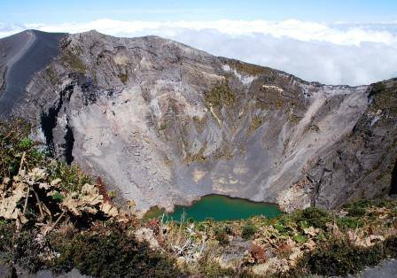
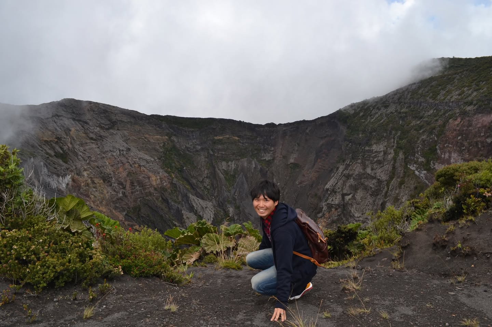
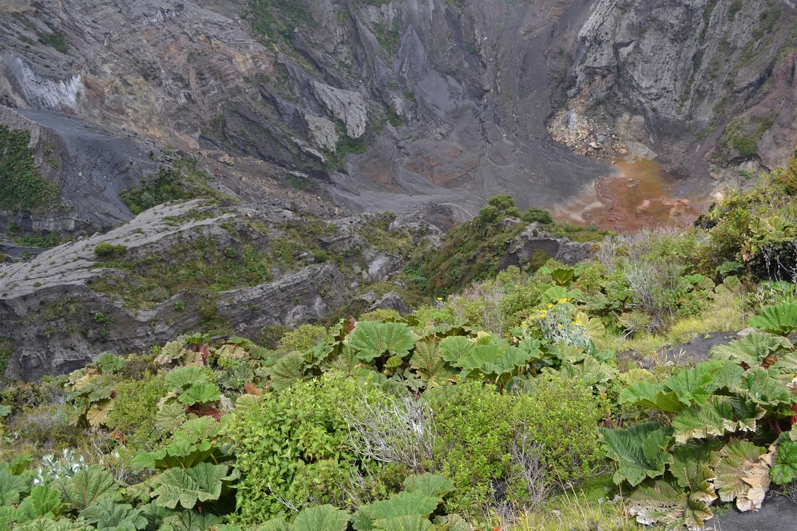

2013年11月7日、まだ語学研修中だった頃、同期の隊員と一緒にイラス火山国立公園へ向かった。
コスタリカの紋章に描かれた火山
イラス火山はコスタリカ中部に位置する標高3,432メートルの活火山で、コスタリカの国章にも描かれている。観光客が目当てにするのは、火口に湛えられたエメラルドグリーンの火口湖だ。ガイドブックにも載っているし、インターネットで検索しても息をのむような色の写真が出てくる。それを見て、行かないわけにはいかなかった。
首都サンホセからバスで約2時間。頂上付近は空気が薄く、平地に慣れた体には軽く頭が痛くなるくらいだった。

なにもありませんでした
頂上はだだっ広い野原と噴火口が広がるシンプルな景色だった。足早に噴火口を覗き込んで、お目当ての火口湖を探した。
なにもありませんでした。
乾いた岩肌と、わずかな赤茶色のぬかるみがあるだけ。あのエメラルドグリーンの湖は、どこにも見当たらなかった。ここまで来るのに片道2時間、がっかり感は半端なかった。


「あの写真はPhotoshopだろう」
バスで一緒になったドイツ人の友人に話すと、一言こう言われた。
「あの写真はPhotoshopを使って作ったんだろう」
彼女は大使館勤務で、スペイン語もペラペラだった。その断言の仕方が妙に説得力を持っていた。
宿のオーナーに事の顛末を話すと、今度はこう返ってきた。
「ぼくは3回行ってるけど、一度も見たことがないよ。jajaja」
地球の歩き方に載っていた交通費も実際の2倍だったし、この日はガイドブックと現実の乖離を体感した日でもあった。火口湖は見られなかったが、友達は増えた。まあ、それで良しとした。
「見られなかった」を笑い話にできるのは、それも旅のうちだからだ。イラス火山は曇りや乾季の時期によって火口湖が現れたり消えたりするらしい。次に行くときは時期を選ぶことにする——たぶん。